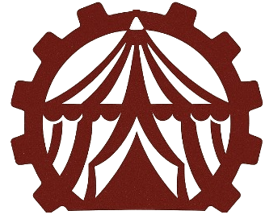
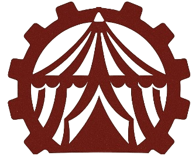

Objetivo do Projeto
O projeto Vaudevilla tem como objetivo desenvolver um modelo conceitual completo de comic/animação, oferecendo uma base narrativa, estética e temática para inspirar artistas, roteiristas e animadores na criação de suas próprias obras. A proposta é demonstrar como um universo pode unir circo, steampunk, arte dos anos 20~50 e crítica social, formando histórias que exploram identidade, espetáculo, manipulação, alienação e liberdade criativa.
Vaudevilla não é uma produção final — é um protótipo criativo, um guia visual e narrativo que mostra o potencial do universo e serve como ponto de partida para futuros projetos, adaptações ou colaborações.
-
Nosso propósito central é apresentar um mundo coerente, vibrante e cheio de camadas, combinando:
- Circo e vaudeville como estrutura social,
- Steampunk retrô inspirado nos anos 1920~1950,
- Metáforas sobre identidade, espetáculo e liberdade,
- Críticas contemporâneas embaladas em fantasia,
- Arcos narrativos com potencial para quadrinhos, animações e jogos,
- Personagens profundos que representam ideias e conflitos reais.
- Experimentações com humor, drama e fantasia.
Lore e História
Em Vaudevilla, criamos um universo onde o entretenimento é ideologia, o circo é sociedade e cada personagem expressa uma crítica ou esperança escondida atrás de máscaras.
Desenvolvemos Vaudevilla como um modelo de referência, que pode ser usado por artistas para imaginar quadrinhos, animações, campanhas visuais ou narrativas completas. Nosso objetivo é inspirar criatividade, não substituir sua visão — mas servir como base para que novas histórias sejam construídas por quem se encantar por esse mundo de Palhaços, Mímicos e Mágicos.
OS TRÊS ARQUETIPOS
"Os gritos, os elogios e a repulsão! Fale bem ou fale mal, mas fale sobre mim."
Esse é o lema e tema principal desse mundo. A briga ideológica pelo controle e influência no campo das ideias e do entretenimento. Os vendedores de emoções que desejam a influência ideológica e o controle da mente e psique.Um mundo fantasioso onde as Emoções e Impulsos se tornam palpáveis e reais, três arquétipos competem pelo Pódio da Graça e pelo domínio do recurso mais importante, o uso da Alegria como Recurso.
- Os Palhaços(Escola/Trupe da Baderna) geralmente representam a Energia, a inocência, as o altruísmo e a ingenuidade. Palhaços geralmente entretém com o simples, expressões, balões, cores e estão sempre cercados de animalzinhos.
- Os Mímicos(Ateliê dos Mimicos) representam uma arte mais silenciosa, gestual, uma ideia de adolescência e rebeldia. Dizem ser raro ver um mímico falar, eles são mais sérios, expressivos e emotivos, trazem uma arte mais pensativa e crítica do mundo ao seu redor.
- Os Mágicos(Corporação do Espetáculo) geralmente se manifestam pela ganância, pela arte de enganar e persuadir, sendo eles a representação da da fama através da persuasão. Poucos que sabem que a Mágica é um truque, para todos os outros os Mágicos são seres divinos e poderosos.

"Moodboard contendo referências visuais usadas apenas para estudo, pesquisa e inspiração artística. Todas as imagens pertencem aos seus respectivos autores."